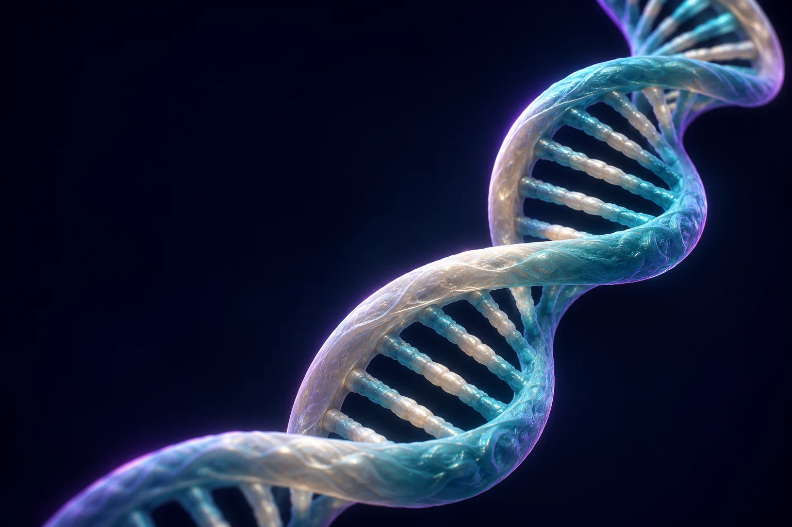
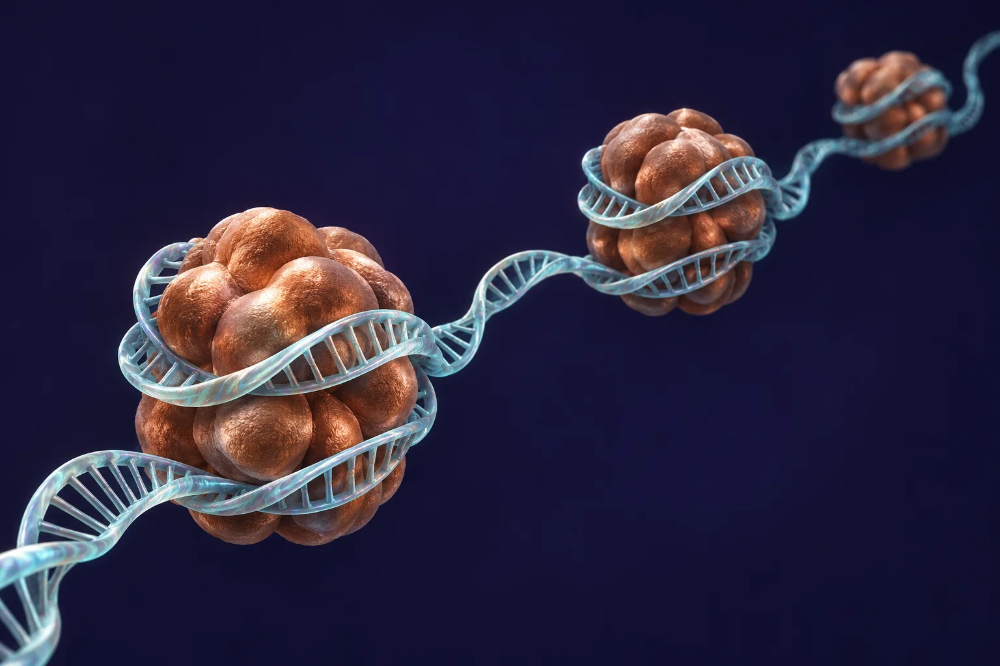

COMPOSITION
HELIX LAB
DNA, in
detail.
Sequence analysis. In your browser.
Inspect a sequence. Follow its reading frames. See where its patterns begin.

01 / ANALYZE
Sequence input
Paste a sequence or FASTA record. IUPAC ambiguity codes are retained and reported.
START WITH AN EXAMPLE
Choose a sequence to inspect
Choose another example
SEQUENCE COMPARISON
Compare two sequences
Align complete inputs and inspect substitutions, gaps, and identity.
GLOBAL ALIGNMENTNeedleman–Wunschmatch +2 · mismatch −1 · gap −2
A global alignment places both full sequences in one alignment. Scores: match +2, mismatch −1, gap −2. IUPAC symbols are compared literally. Each input is limited to 1,500 nt.
03 / RESULTS
Sequence analysis
Known bases denominator
STRANDS
Transformations
Coding-strand T-to-U conversion and transcription from a template given 5′ to 3′ are distinct operations. Both RNA outputs are shown 5′ to 3′.
WINDOW PROFILE
GC content
Each point is a complete window advanced by one nucleotide. Ambiguous bases are omitted from that window's denominator.
CANDIDATE REGIONS
Open reading frames
TRANSLATION
Six reading frames
Select a codon to locate its nucleotides. Translation depends on the organism and cellular compartment. These are computational translations, not evidence of protein expression.
CODON COUNTS
Codon usage by frame
PATTERNS
Motifs and repeats
IUPAC codes match as literal symbols in this exact search. Ambiguous bases are not expanded.
SEQUENCE VIEWER
Positions, codons and complementary strand
Top strand reads 5′ to 3′. Complement runs antiparallel, 3′ to 5′. Select a base or codon for details.
Select a nucleotide or codon.
MOLECULAR NOTES
Small structures.
Deep connections.
Explore the molecular relationships behind the sequences, from complementary bases to the organisation of a genome.
Open the explorers ↓
MOLECULAR NOTES
Molecular Notes
Mechanisms and sequence rules that explain the analyzer’s results.
Four bases, one alphabet
A, C, G and T make a compact chemical alphabet. The order of these bases carries sequence information, while their shared sugar-phosphate backbone lets the polymer remain structurally consistent.
NCBI Bookshelf: DNA structure ↗Pairing is selective
A pairs with T and G pairs with C through complementary hydrogen-bonding patterns and compatible geometry. A:T pairs have two canonical hydrogen bonds and G:C pairs have three. Base stacking also contributes to duplex stability.
NCBI Bookshelf: DNA structure ↗The helix has a regular geometry
In B-form DNA, two polymer chains wind around a common axis. Base pairs stack inside the helix and the sugar-phosphate backbones face the surrounding solution. This is a schematic, not an atomic-scale structure.
NCBI Bookshelf: DNA structure ↗Strands run in opposite directions
The DNA strands are antiparallel: one runs 5′ to 3′ and its partner 3′ to 5′. DNA polymerases extend a new strand by adding nucleotides to a 3′ end, so template direction shapes replication and transcription.
5′ → 3′A · T G · C3′ ← 5′Replication copies both strands
At a replication fork, each parental strand serves as a template. Leading-strand synthesis proceeds continuously toward the fork; lagging-strand synthesis makes short Okazaki fragments that are later joined.
parental DNA↙ fork ↗two daughter duplexes
NCBI Bookshelf: replication ↗Transcription makes an RNA copy
RNA polymerase reads a DNA template strand and synthesizes RNA 5′ to 3′. The RNA sequence is complementary to that template and resembles the coding strand, with U replacing T.
DNA template→ RNA5′ to 3′
NCBI Bookshelf: transcription ↗Codons depend on a frame
Once a reading frame is chosen, mRNA is read as consecutive triplets. Shifting the start by one nucleotide changes nearly every downstream codon. The standard code is common, but some organelles and microbes use variants.
AUG | GCU | UAAMet · Ala · stopChromatin packages long DNA
Eukaryotic DNA associates with histones and other proteins to form chromatin. Packaging compacts the genome and participates in regulating which DNA regions are accessible to cellular machinery.
NCBI Bookshelf: chromatin ↗Repeats can be functional or mobile
Repeated DNA includes tandem repeats and interspersed transposable elements. Some repeats contribute to chromosome structure or gene regulation; others can change copy number and reshape genomes over evolutionary time.
TTAGGG · TTAGGG · TTAGGGsynthetic display of a telomere motifVariation records evolutionary history
Mutations introduce sequence differences; recombination and inheritance distribute them. Comparing many loci can support evolutionary hypotheses, but results depend on sampling, model assumptions, and biological context.
NCBI Bookshelf: molecular evolution ↗Mutations can affect different levels
A substitution may be synonymous, missense, or stop-gaining in a coding region. Insertions and deletions not divisible by three can shift the reading frame. Consequences depend on transcript, protein, cell type, and organism.
GAG → GTGGlu → Val in the HBB exampleOne DNA region can make different RNAs
RNA processing removes introns and joins exons. Alternative splice choices can yield multiple mature transcripts from a gene, with patterns that vary among tissues and developmental stages.
NCBI Bookshelf: RNA processing ↗PAIRING EXPLORER
Why these bases pair
Adenine (A)··Thymine (T)
CODON EXPLORER
Build an RNA codon
→
AUG is the standard start codon and encodes methionine.
MUTATION EXPLORER
HBB coding example
RefSeq NM_000518.5 positions 16–24. Change one base in the seventh coding codon and compare the translated residue. This illustrates sequence effect only, not individual health prediction.
The classic HbS coding change is c.20A>T, changing GAG to GTG and glutamate to valine. Mature hemoglobin chain numbering omits the initiating methionine.
Source: GeneReviews ↗These short sequences are constructed teaching examples, not reference variants. Consequences outside the shown coding interval are not predicted.
05 / CONTEXT
Genetics in everyday life
Examples of genetic variation interacting with cell biology and environment. These stories do not predict an individual's traits.
DIGESTION
Lactase persistence
Adult lactase production is associated with regulatory variants in an enhancer within MCM6 that influences nearby LCT expression. Different persistence-associated variants arose in distinct populations; the European −13910C>T variant is not a universal marker.
Molecular basis review ↗METABOLISM
Caffeine processing
CYP1A2 encodes a major enzyme involved in caffeine metabolism. Genetic differences can contribute to enzyme activity, while smoking, medicines, diet, and other conditions can also affect it. A variant alone cannot predict how an individual will feel after caffeine.
Human caffeine metabolism study ↗SENSORY PERCEPTION
Coriander aroma perception
A genome-wide association study linked a variant near olfactory-receptor genes, including OR6A2, to reported soapy aroma perception in a European-ancestry cohort. The association was modest and does not determine whether someone likes coriander.
Eriksson et al., Flavour ↗PIGMENTATION
Eye colour is not a one-gene switch
Variation near HERC2 can influence expression of OCA2, which affects melanin production. Many genes contribute to eye colour, so simple dominant-recessive charts cannot capture the full range of human variation.
MedlinePlus Genetics ↗HEMOGLOBIN
A change in HBB
The HbS coding variant changes a glutamate codon to valine in beta-globin. It demonstrates how one coding substitution changes a protein sequence; health outcomes depend on genotype and physiology, not on a single isolated sequence result.
GeneReviews: Sickle Cell Disease ↗EXAMPLE SEQUENCE SOURCES
Synthetic teaching sequence: constructed for this workspace; not a biological reference record. HBB coding fragment: Homo sapiens HBB mRNA RefSeq NM_000518.5, coding positions 1–117. HBB variant: the same fragment with coding position 20 changed A>T (c.20A>T; rs334). Telomere tract: synthetic 60-nt sequence consisting of ten TTAGGG repeats, not a genome reference. Mitochondrial-code example: synthetic 12-nt demonstration of codon reassignment, not a mitochondrial sequence. Reference record: NCBI RefSeq NM_000518.5 ↗.
CURIOUS DNA
When genomes break expectations
Research findings that show how varied DNA and gene expression can be.
The human genome is not the largest
Genome size does not track organismal complexity. Several plants and lungfish have genomes many times larger than ours, often because repetitive DNA and transposable elements accumulated over evolutionary time.
Plant genome size review ↗Octopuses edit many neural RNAs
Some coleoid cephalopods show extensive A-to-I RNA editing in nervous-system transcripts. This changes RNA messages after transcription; it does not rewrite the underlying genomic DNA sequence.
Liscovitch-Brauer et al., Cell ↗Ancient viruses left genomic traces
Endogenous retroviruses are remnants of retroviral integrations inherited through the germ line. In humans they account for a substantial portion of the genome, though most copies no longer produce infectious virus.
Endogenous retrovirus review ↗Telomeres are repetitive end caps
Human telomeres contain tandem TTAGGG repeats and associated proteins. They help protect chromosome ends, but their length varies among cells and changes with cell division, age, and other factors.
Molecular Biology of the Cell ↗Guanine-rich DNA can fold into four-stranded structures
Some G-rich sequences can form G-quadruplex structures stabilized by monovalent cations under suitable conditions. Whether a predicted motif folds in a cell depends on sequence context and molecular environment.
G-quadruplex review ↗Mitochondria use a modified genetic code
Vertebrate mitochondrial translation differs from the standard code: UGA encodes tryptophan, while AGA and AGG are stops. A sequence must be translated using the code appropriate to its source.
NCBI genetic code tables ↗Cytosine can carry a chemical mark
DNA methylation commonly occurs at cytosines in CpG dinucleotides in mammals. It is associated with gene regulation and cell identity, but its effect depends on genomic location and chromatin context.
NCBI Bookshelf: epigenetics ↗DNA damage is repaired in several ways
Cells use distinct repair pathways for different lesions, including mismatch repair, base-excision repair, and nucleotide-excision repair. These systems reduce errors but do not make genomes mutation-free.
DNA repair overview ↗One gene can yield many RNA forms
Alternative splicing can combine exons in different patterns, producing distinct mature transcripts from one gene. Tissue, developmental stage, and regulatory factors influence which forms are made.
NCBI Bookshelf: RNA splicing ↗Some genes are split across huge distances
Human genes can contain long introns and span very large genomic intervals. The transcribed pre-mRNA is processed, so the mature coding message can be shorter than the DNA region that produced it.
NCBI Bookshelf: gene structure ↗DNA evidence can reconstruct ancestry
Shared sequence variants can help infer evolutionary relationships when interpreted with suitable models, sampling, and genomic context. A single similarity score does not establish ancestry or function.
NCBI Bookshelf: molecular evolution ↗Some organisms reassign stop codons
Genetic-code variants occur in some mitochondria and microbes. This is why translation tools expose a code choice and why the source organism matters when interpreting a translated sequence.
NCBI genetic code tables ↗ABOUT THIS PROJECT
About this project
Helix Lab is an independent project developed to make DNA sequence analysis more accessible, visual, and interactive.
The idea was to bring sequence analysis, scientific visualizations, and clear biological explanations together in one place, making it easier to examine DNA and understand what the results mean.
Created by Shambhavi · GitHub ↗
METHOD NOTE
Ambiguous IUPAC symbols remain in the sequence. Base percentages use only A/C/G/T as the denominator. Translation uses the selected NCBI genetic code (table 1 or 2); ambiguous codons resolve only when every expansion gives the same residue. ORFs use ATG and table-specific stops, include stop codons in length, and report 1-based inclusive input coordinates. Candidate ORFs are not validated genes.
AI tools assisted development and review. The deployed application does not use AI services, and user sequences remain in the browser.